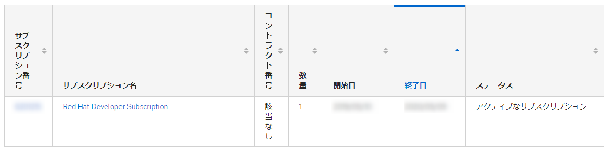
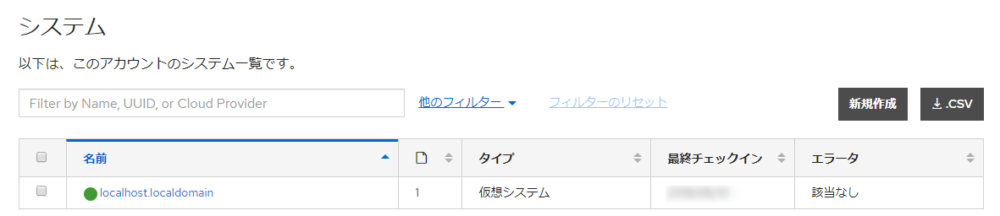

Redhat サブスクリプション登録
1. Redhat 開発用サブスクリプション登録
開発用寒サブスクリプションを利用してOSインストールを行ないたい場合は専用のISOをダウンロードする必要がある
開発者サイトにログイン
Redhat Developer
サイトより利用したいOSのISOイメージをダウンロードする
その時利用者情報の入力を求められる
入力後ダウンロードが開始する
しばらくするとカスタマーポータルにてサブスクリプションが関連付けされていることを確認できる

インストールしたサーバへのサブスクリプション登録
# subscription-manager register --username <username> --password <password> --autosubscribe
カスタマーポータルにて割当が正常にできていることも確認

開発用サブスクリプションの有効期限は1年